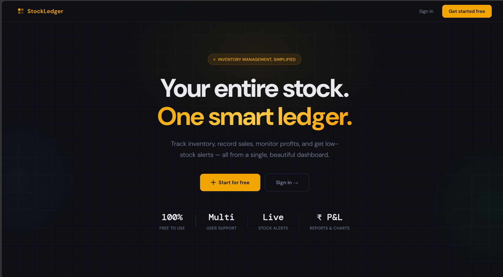

Cybersecurity Student
& Data Science Learner
Passionate about building scalable web applications, exploring data science, and solving real-world problems through technology.
About Me
I am an undergraduate student pursuing B.Tech in Cybersecurity while also studying BS in Data Science at IIT Madras. I enjoy building practical software projects that help solve real-world problems and strengthen my understanding of technology. Through hands-on development, I continue to improve my skills in programming, web development, databases, and problem-solving.
My interests lie in software development, data science, and exploring emerging technologies. I enjoy learning by building projects, experimenting with new tools, and turning ideas into functional applications. Currently, I am focused on developing my technical skills, gaining industry experience, and creating solutions that deliver real value to users.
1
Projects Completed
720+
Linked-in Connections
My Education
Bachelor in Science in Data Science and Application
Indian Institute of Technology - Madras
Pursuing B.S. in Data Science and Applications from IIT Madras.
Bachelor of Technology in Computer Science (Cyber Security)
Bharat Institute of Engineering and Technology - Hyderabad
Pursuing B.Tech in Computer Science (Cyber Security) from Bharat Institute of Engineering and Technology.
Intermediate
Narayana Junior College - Hyderabad
Completed Intermediate from Narayana Junior College.
Schooling
Narayana Olympiad School - Hyderabad
Completed Schooling from Narayana Olympiad School.
My Experience
Market Researcher
Jamsetji Tata Society for Innovation and Entrepreneurship (JITSIE), IIT Madras
Content for Market Researcher role at JITSIE, IIT Madras.
Co-Founder & Director
E-Cell, BIET
Co-founded and helped lead the Entrepreneurship Cell at BIET, promoting innovation, entrepreneurship, and student engagement through various initiatives and events.
House Member
Nilgiri House IIT Madras
Resident member of Nilgiri House at IIT Madras.
Campus Ambassador
TRYST, IIT Delhi
Promoted THe Great Indian StartUp, the annual entrepreneurship fest of IIT Delhi.
Outreach Executive Intern
E-Cell IIT Madras
Selected as an Outreach Executive Intern at E-Cell IIT Madras, contributing to outreach initiatives, student engagement, and entrepreneurship-focused programs.
Campus Ambassador
EeDC, IIT Delhi
Promoted EeDC, IIT Delhi's Entrepreneurship Development Cell, across the BIET campus, engaging students and fostering an entrepreneurial mindset.
Technical Arsenal
Frontend
Backend
Tools
Featured Projects

StockLedger
A web-based inventory management system for tracking products, sales, profits, and low-stock alerts with multi-user support.